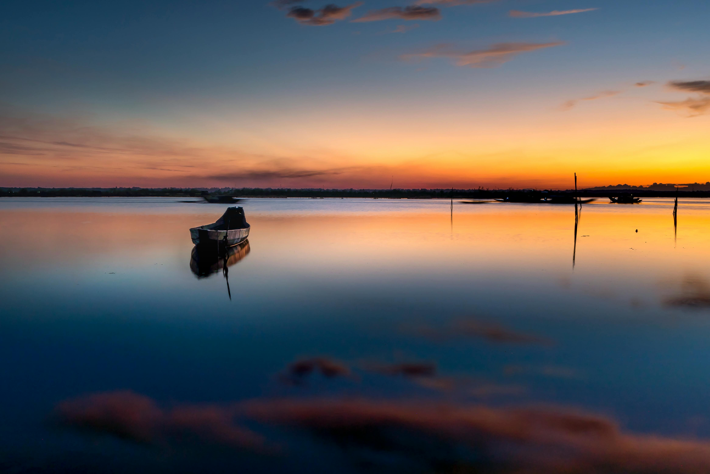
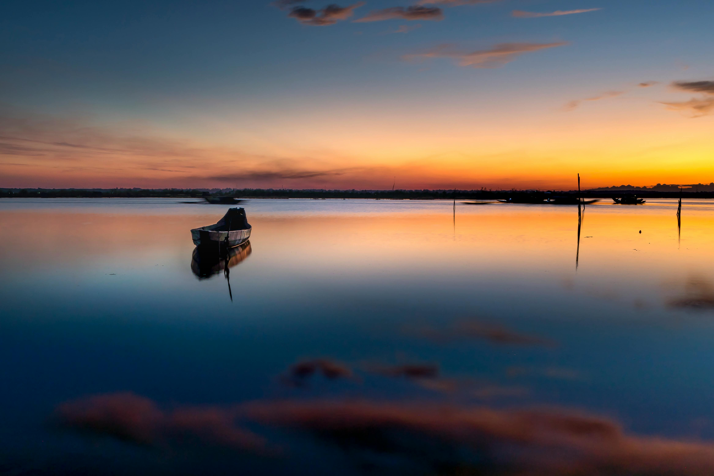

Welcome to the world of Beautiful Landscapes
This website serves as a celebration of the breathtaking landscapes that exist around the world. Each landscape is a testament to the raw beauty of our planet, showcasing nature’s incredible diversity and the vastness of the natural world. From the gentle lapping of ocean waves against distant shores to the powerful rush of waterfalls cascading down from towering cliffs, these stunning scenes capture the heart of the Earth’s natural wonders.
Imagine standing at the edge of a vast, endless desert, its warm golden sands stretching for miles under a brilliant blue sky. Or picture yourself amidst a dense, mist-covered rainforest, where the air is thick with the sound of wildlife and the scent of damp earth. On the other hand, you could find yourself gazing at the towering peaks of an ancient mountain range, their jagged edges cutting into the sky, or looking out over lush, rolling hills painted in various shades of green. The landscapes featured on this site span all terrains and climates, from serene, tranquil lakes nestled in the valleys of snow-capped mountains to the rugged and untamed beauty of dense forests and craggy coastlines. Picture golden hour in a field of wildflowers, where the sun’s soft glow lights up the entire landscape, casting long shadows and creating a symphony of warm colors. Every photograph, every view, tells a story—of towering cliffs carved by centuries of wind and rain, of vast plains dotted with scattered rocks and solitary trees, of shimmering lakes reflecting the open sky, and of windswept shores where the ocean’s eternal motion brings an unspoken sense of peace. These views go beyond mere scenery—they’re windows into the heart of the planet, giving us an opportunity to step into worlds untouched by human hands, where the rhythms of nature reign supreme. The intricate layers of every mountain range, the peaceful ripple of every river, and the endless stretches of open skies offer us a connection to something far greater than ourselves.
As you explore the collection of images and videos on this site, let each landscape transport you to another place, another time, where you can lose yourself in the simple yet profound beauty of the world around us. Let the raw, untamed power of nature remind you of its resilience, and let its delicate, fleeting moments of calm inspire a sense of peace and awe. Whether you are an avid traveler, a photographer, or simply someone who appreciates the beauty of the world, these landscapes offer a constant reminder that our planet is full of extraordinary sights, waiting to be discovered and cherished.
Relaxing Nature Sound
Features Landscapes
Explore a handpicked collection of stunning lasndscapes - from serene lakes and glowing sunsets to majestic mountains and forest streams - each one a windowminto nature's incredible beauty.

 



A breathtaking view of the ocean tides
Let the soothing rythm of the ocean wash over you in this calming video. Captured at sunset, the gentle waves and golden light offer a moment of peace and connection with nature.